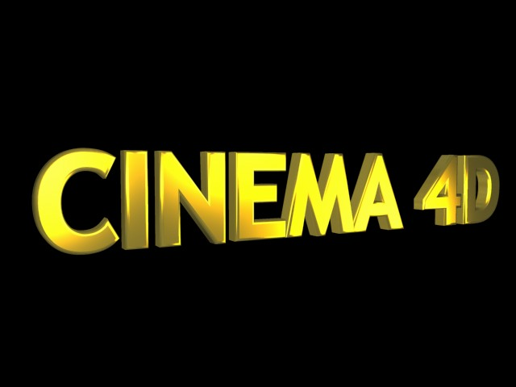

常规
你可以使用滑块或数值来调整每个灯光的颜色，使用滑块上方的按钮可以改变颜色系统（如 RGB、HSV 等）。
使用颜色滑块还能实现negative lighting效果，这在下文中会进行介绍。
可以通过色温值来设定灯光颜色（点击颜色选项左侧的小三角），当启用使用色温选项时，它会替代 RBG/HSV 颜色滑块。（另见白平衡 (K)）。
注意，色温可以准确地制作动画，而颜色选择器中的开尔文温度只能被内部处理为 RBG 颜色并进行插值计算。
这个数值控制光源的整体亮度。虽然它看起来只是调亮或调暗光源，但是它还有另一个有趣而且有用的效果。将强度设置为负值会产生负光照，这时光源的颜色会很重要，这个颜色不会被添加到负光源所照射的地方。使用这个特性可以人为地调暗或着色场景中的特定区域。
你可以定义一个光源的明亮程度而不用考虑其亮度。亮度的数值可以远远大于100%，不管是暗淡的烛光还是明亮的阳光都可以进行模拟。
这种灯光在配黑精心布置的环境光照和衰减范围时效果会更好，因此需要对环境光照有一定的理解。
定义灯光的类型。

泛光灯类似于真实世界中的灯泡——朝所有方向投射光线。在场景中间放置一个泛光灯能均匀地照亮场景。
聚光灯只会朝一个方向投射光线，默认方向是 Z 轴。你可以轻易地移动和旋转它来照亮单独的对象或场景中的特定区域。聚光灯可以投射圆形或方形的光锥。
方形光锥对于需要将方形图像投射到墙上的情况是一个理想的选择。
圆形光锥的案例有车头灯和手电筒等。
这种灯光被称为远光灯是因为它模拟的是从无限远处投射来的光线，例如使用远光灯可以均匀地照亮一片地面（前提是地面时平坦的）。因为远光灯是无限远的，这种灯光没有实际的起点，因此远光灯的位置不会对场景产生影响，只有光源的方向是有意义的。
远光灯适合用来模拟阳光。

The light rays from an Area light expand from all points on its surface outwards in all directions.
A rectangular computer screen is a good example of such a light.
The resultant lighting and specular effects are somewhat different from those of an 泛光灯 light; specular highlights are more angular and the surface illumination is richer. The closer the light source is to the object, the more apparent this becomes.
Improved Area Light Object
 Natural light dispersion using an area light source.
Natural light dispersion using an area light source.The corresponding Area shadows behave in accordance with the Area light object .
As you can see in the images above, the rectangular Area light on the right (regulated with the use of Falloff Angle) emulates very accurately light cast through a window.
 Image Copyright Holger Schömann.
Image Copyright Holger Schömann.The above scene was lit using one 泛光灯 light, an Area light with Area shadow, and rendered using Ambient Occlusion (Advanced Render). The Area light is rectangular and was placed in the window opening.

Parallel lights resemble the Infinite light. Unlike the Distant light source however, the Parallel light has an origin and simulates a large, single axis wall of light. By default, all Parallel lights will radiate light rays along the Z axis. These lights take the appearance of an infinitely large surface, radiating parallel light in a single direction; anything behind the point of origin will not be illuminated.

Parallel spotlights resemble the regular spotlight but do not have light cones to define falloff or distance. Instead, light rays are cast along cylinders and/or bars. The origin is important in defining which objects in a scene will be affected by this light. The radius of the spotlight can also be modified using the adjustment handles.
See Photometric tab, in which an IES file must be loaded.
Defines the type of 投影 generated by a light source.
Select None if your light is to cast no 投影. This is a very helpful option in a scene with many lights, allowing you to turn on shadow-casting for the main lights only. Any real world photographer will envy you this option and its possibilities.
渲染时间（概述）
- Soft shadows are calculated far more quickly than hard shadows, hard shadows being much faster to calculate than area shadows.
- Making a light visible in a rendered scene adds a negligible amount to its render time. Using a volumetric light increases render time, sometimes substantially, according to the Sample Distance.
- Noise adds to render time, with hard and soft turbulence requiring more calculations than basic noise, while wavy turbulence roughly doubles rendering time over that of basic noise.
- Using a high sample radius will increase the render time of soft shadows.
- Area lights also add to render time, although not to the same extent as the processor intensive volumetric light.
Defines the visibility of the light in a scene. This type of effect can be seen in a smoky room.
This effect is comparable to fog, which does not diminish light, but rather adds to its brightness.
With 可见灯光, you can produce stunning effects including headlights, shimmering lights, laser beams and a host of atmospheric effects.
In nature, a light beam becomes visible when small particles such as dust, insects, smoke or fog are present in the air. For example, if a car headlight shines in fog, you will see its cone of light quite distinctly. In Cinema 4D, all light sources and/or the light cone emitted can be made visible.
If 可见灯光 is set to Visible on the General page, the light source will produce 可见灯光 that passes through all objects. For example, a 可见灯光 could be placed in the center of a planet’s sphere to simulate an atmosphere.
The Visible option is of special importance to the particle system. Visible lights (with No Light Radiation enabled) lend themselves to a huge range of effects, such as nebula clouds, smoke, comet tails, fire and flames.

A 可见灯光 does not affect objects that lie in its cone of light — the light rays penetrate objects unhindered, casting no shadow in the visible light’s beam.
In order for a shadow to be cast by a 可见灯光, volumetric lighting must be used.
The parameters for the visible Volumetric light are taken from the light source’s shadow map values: Resolution X, Resolution Y, Sample Radius and Parallel Width.

Enabling the 反向测定体积 function has the interesting effect of inverting your volumetric light — that is, the light is visible where the light cone would normally be in shadow.
Imagine a company logo, behind which you have placed an 反向测定体积 light source. This inverts the light’s volumetric effect, giving the impression that the light is radiating from the logo itself.

If you need to see just the 可见灯光 and/or its lens effects without the light source actually illuminating objects, enable this option. Should you need your light sources for special effects (such as the exhaust gas of a jet engine) enable this box for faster rendering.
If this option is enabled, a wireframe approximation of the light’s illumination is shown in the viewports. This range can be adjusted by dragging the handles of the wireframe representation.
Normally the brightness of a surface is determined by the angle at which a ray of light hits it. The greater the angle between the ray and a tangent to the surface, the more the surface will be lit by the light. When 环境光照 is switched on, however, this physical law is waived. Here the angle does not matter. All surfaces are lit with the same intensity. This results in a much flatter look. Only the material color is considered in the lighting calculations.
环境光照. |
 环境光照 with Falloff enabled. 环境光照 with Falloff enabled. |
With both 环境光照 and Falloff enabled for the light source, you can lighten specific regions of your scene in a similar way to how you darken them with Negative Lighting, explained earlier.
Enable this option to show an approximation of the visible light in the viewports, not to be confused with illumination. Again, this range can be interactively adjusted via its handles.
When 漫射 is enabled, the color properties of an object are ignored by the light source; only specular surfacing is produced by the light. This can be useful for objects such as a golden signature, where you would like specular glints, but no lightening of the color properties.
漫射 disabled. |
漫射 enabled. |
Enabling this option shows an approximation of the selected light’s clipping range (the restriction of the light range) in the viewports and can be interactively adjusted with the wireframe’s handles.
When this option is enabled, the light source produces no specular highlights on your scene’s objects. Imagine you have a bottle on a table with two or more light sources in the scene. The bottle may show too many specular highlights, with the glass material looking too busy. To avoid this, enable No Specular for some of the light sources.
 This bottle is lit by two light sources, causing more highlights to develop than you would normally want.
This bottle is lit by two light sources, causing more highlights to develop than you would normally want. Specular option is enabled for one light source only. Now the highlights are fine.
Specular option is enabled for one light source only. Now the highlights are fine.If you enable this option, separate diffuse, specular and shadow layers will be created for the light source when you render (provided you have set the appropriate multi-pass parameters).
 Left: GI 照明 disabled. Right: Enabled. Without GI 照明 from both light sources the scene will be calculated with absolutely no GI.
Left: GI 照明 disabled. Right: Enabled. Without GI 照明 from both light sources the scene will be calculated with absolutely no GI.Use this setting to define if objects illuminated by a given light source should "pass on" their light with regard to GI. If this option is disabled this light source’s illumination will affect objects (they will be illuminated) but these objects will not reflect light onto any other object(s).
After Effects: Note that this option is designed for use in conjunction with exchange described in point 2 above.
If enabled, the light source will be exported to a compositing application (see also here).